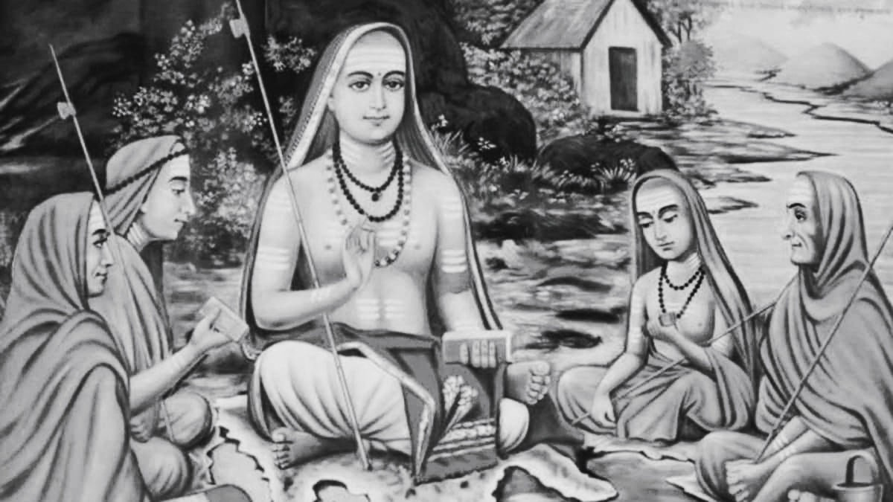

Unlearning for leaving ignorance
11:12 | April 13, 2026
The desire to know more is almost inseparable from being human. From the earliest stage of awareness, when a child first begins to observe the world, there is a natural pull toward understanding everything around them. This curiosity does not need to be taught, it simply exists as part of being alive. As we grow, society strengthens this tendency even more by encouraging learning, questioning, and constant expansion of knowledge. Most people strongly believe that the more we know about anything or everything, the better we become, not only for ourselves but also for the people around us. At first glance, this belief feels completely correct and even comforting. Knowledge clearly helps us improve decision making, it helps us adapt to situations, and it allows us to function more effectively in the world. It gives structure to our thoughts and direction to our actions. In many ways, it becomes the foundation of what we call personal and societal progress. However, when we slowly begin to widen our perspective beyond the boundaries of daily life, something deeper begins to emerge. If we are not limited only to this short span of life but start thinking in a much larger sense, even beyond life itself, then new questions naturally arise. What happens to all the knowledge we collect when life ends? Where do all our thoughts go when the body can no longer function? Do they simply vanish without meaning or continuation? And even before birth, when none of this knowledge existed for us, what exactly was that state? These questions are not meant to reject learning, but to push us into thinking about its true place in existence.
When we reflect deeply, it becomes clear that the issue may not lie in knowledge itself but in how and why we pursue it. We often gather information without questioning its direction or purpose. We rarely stop to ask whether what we are learning is leading us toward clarity, confusion, or even unnecessary complexity. This creates a subtle form of ignorance that is not caused by lack of education but by lack of awareness. It is a strange condition because it exists even in people who are highly educated and intellectually capable. Humans, despite being the most advanced thinking beings known to us, often limit themselves within self created boundaries of understanding. We tend to assume that whatever lies outside our current framework of thinking is either irrelevant or too abstract to consider. In doing so, we restrict the natural vastness of human understanding without even realizing it.
So what is actually wrong with this kind of ignorance? At a surface level, it may not appear harmful at all. After all, human civilization continues to move forward at an incredible pace. Science, technology, communication, and infrastructure are constantly evolving, and knowledge seems to be expanding in every direction. But the problem begins when this expansion lacks balance and deeper direction. Knowledge on its own is powerful, but without wisdom it becomes incomplete. In ancient times, this distinction was not only recognized but carefully preserved. The rishis were not simply individuals collecting information or performing intellectual exercises. They were seekers of truth who tried to understand the deeper structure of existence. They had the clarity to recognize that knowledge must be measured, guided, and balanced according to human capacity and purpose. They understood that too little knowledge leaves a person unaware, while too much unstructured knowledge can overwhelm and confuse the mind. In both cases, the result is a form of ignorance, though it appears in different forms.

Image: Sri Shankara Acharya
Acharya Shankara had expressed this understanding centuries ago in his teachings. He emphasized that everything in existence has its own limit, and knowledge is no exception. When knowledge is insufficient, a person lives in darkness without awareness of reality. But when knowledge grows excessively without direction, it can create disturbance, distraction, and inner conflict. The mind becomes crowded with information but lacks clarity in understanding. In both situations, ignorance remains present, either through absence or through overload. This kind of imbalance does not remain limited to individual experience alone. Over time, it affects how life is lived, how decisions are made, and even how societies evolve. A life that moves without balance in knowledge and wisdom eventually struggles to maintain stability in the long term.
Modern education, on the other hand, has taken a very different path. The present system of learning is strongly oriented toward material success and measurable achievement. Students are trained to acquire skills that help them secure jobs, build careers, and compete in an increasingly fast paced world. This system has undoubtedly produced remarkable results. Human beings today have achieved levels of technological and scientific advancement that were unimaginable in earlier times. We have access to vast information, powerful tools, and global connectivity. Yet, while material knowledge has grown significantly, other dimensions of human life have slowly lost attention. Moral understanding and spiritual awareness are often treated as optional rather than essential. As a result, many individuals grow intellectually strong but internally uncertain. They may have answers to technical problems but still struggle with deeper questions about purpose, meaning, and fulfillment.
Another important issue is how society reacts when someone tries to explore beyond material knowledge. When an individual begins to question deeper aspects of existence or shows interest in understanding life beyond physical and practical concerns, they are often misunderstood. Such people may be labeled as unrealistic, impractical, or even disconnected from reality. In some cases, they are placed into predefined categories such as spiritual teachers or gurus, but without genuine understanding of what they are actually exploring. This kind of reaction creates hesitation in others. It discourages open inquiry into areas that are not immediately measurable or commercially useful. Gradually, this shapes a mindset where only certain forms of knowledge are considered valid, while others are dismissed without exploration.
A complete human life cannot be built on a single dimension of understanding. Human existence is made up of multiple layers, including physical health, mental stability, emotional depth, and spiritual awareness. All these aspects are interconnected and influence one another continuously. Ignoring any one of them creates imbalance. In the current world, material concerns dominate almost every aspect of life. People focus heavily on external success and physical comfort. In recent times, mental health has begun to receive more attention, which is a positive and necessary shift. However, spiritual understanding is still widely neglected or misunderstood. Many people either reject it completely without exploration or accept it blindly without applying reasoning. Both approaches prevent a real understanding of what spirituality actually represents in human life.
There is a traditional saying that advises us not to search for the origins of certain profound things, such as rivers or the lineage of ancient sages. This idea suggests that some truths are not meant to be traced in a linear or physical sense. In a similar way, the deeper roots of balanced knowledge belong to a time when life was structured differently. Material needs were simpler, mental awareness was more naturally aligned, and spiritual understanding held a central position in daily living. When we compare modern scientists with ancient rishis using only present day standards, it may appear that modern science represents higher intelligence. However, this comparison itself may be limited because it is based only on measurable outcomes and not on the full spectrum of human understanding.
The deeper concern lies in the many forms of ignorance that exist within human life. We often lack clear understanding of ourselves, of other people, and of the world we live in. There is confusion in distinguishing what is truly meaningful from what is temporary. Our sense of morality is often inconsistent, our reasoning can be influenced by external pressures, and our capacity for selfless action is frequently limited by personal interest. These layers of ignorance are not always visible on the surface, but they quietly shape decisions and behaviors. If they remain unaddressed for too long, they can slowly lead humanity toward imbalance and instability in a broader sense.
To move away from such ignorance, simply accumulating more information is not enough. In many situations, it becomes equally important to unlearn certain patterns of thinking that no longer serve clarity. Not all knowledge contributes to growth in the same way, and not all information leads to wisdom. Sometimes, holding onto unnecessary complexity only increases confusion. Creating space for reflection, simplicity, and deeper awareness becomes essential. This requires patience and a willingness to question long held assumptions about what knowledge truly means.
Traditionally, guidance from a guru played an important role in helping individuals navigate this balance. A teacher or guide would help a seeker understand which direction to follow and how to avoid confusion along the way. In the present time, however, finding such genuine guidance has become extremely difficult. Trust between individuals has weakened, and authentic mentorship is rare. Despite this, the need for guidance has not disappeared. It remains as relevant as ever because human confusion has not reduced, even though information has increased. Acharya Vishnugupta once explained that knowledge gained without proper guidance is like a valuable gem placed in the hands of someone who does not know its worth. It may still be precious, but without understanding, it cannot be used effectively.
When ignorance continues in this form, it slowly takes away the feeling of true fulfillment. A person may achieve success, gather wealth, gain recognition, and still feel an inner emptiness that is difficult to explain. This emptiness is not caused by lack of knowledge or lack of achievement, but by imbalance in understanding. True fulfillment arises when knowledge is connected with wisdom and when learning is aligned with purpose. It also comes from recognizing that not everything valuable in life can be measured, quantified, or stored as information.
In the end, the real question is not about how much knowledge a person accumulates, but about how deeply they understand the purpose behind that knowledge. When learning is guided by wisdom and balanced across all dimensions of human existence, it becomes meaningful in a complete sense. Only then can knowledge truly support a life that feels whole, stable, and genuinely fulfilling.
Think about it!